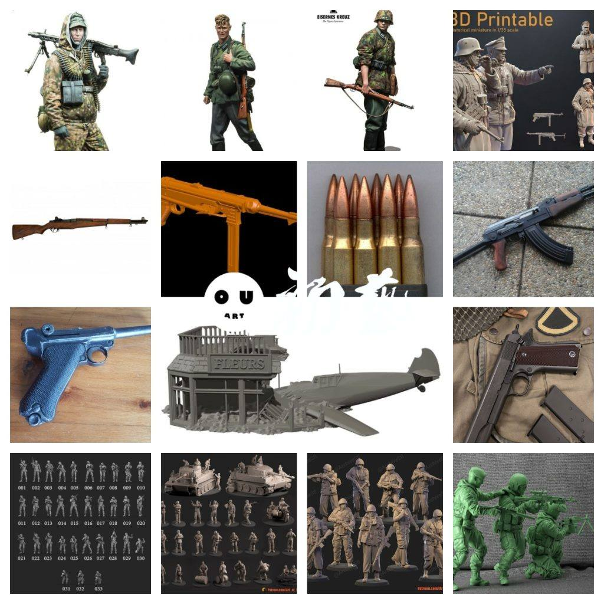
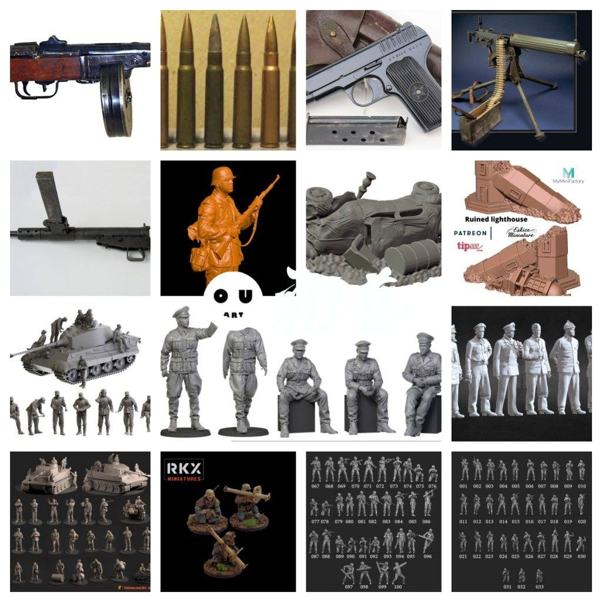
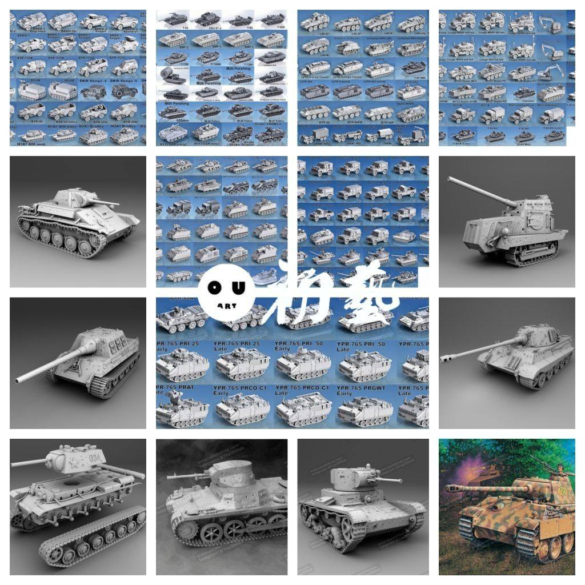
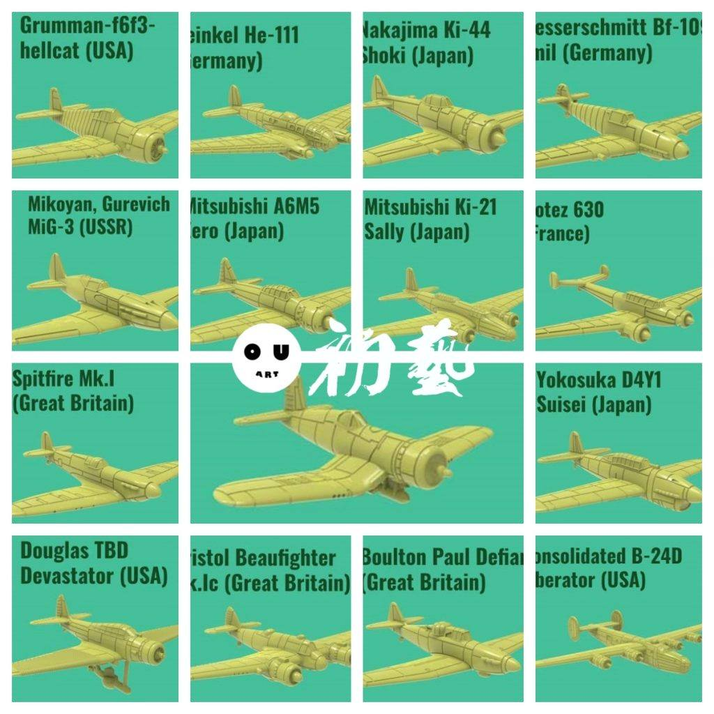
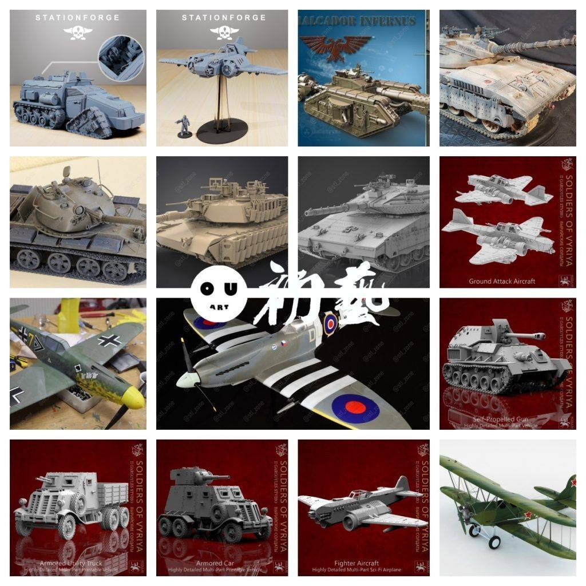
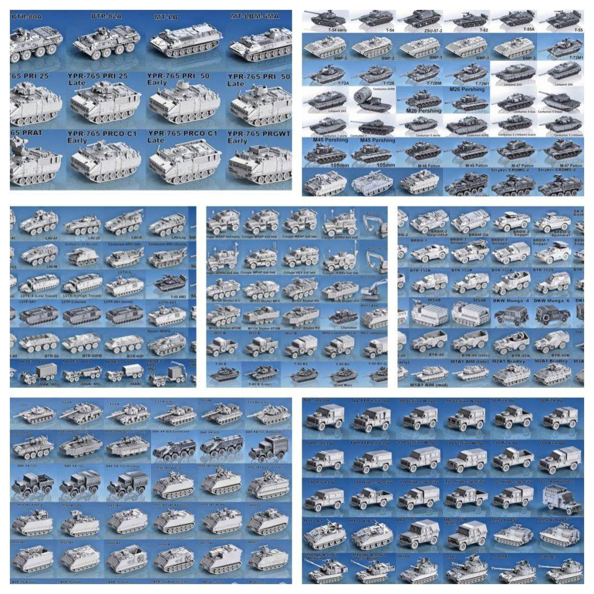

模型分享
军事模型专贴|持续更新





今天带来一个军事模型专题帖子，收录了人物士兵、飞机、坦克以及多种武器等丰富的军事元素。这里的人物模型包括不同国家和年代的士兵形象，涵盖各式军装与装备，细节刻画到位，适合军事题材的涂装或情景再现。飞机部分囊括了经典战机与现代机型，从二战名机到喷气式战斗机，模型分件精度高，可参考真实标识进行涂装。坦克和装甲车同样种类丰富，既有早期履带式坦克，也有现代化装甲车辆，分件细致程度足够满足高精度打印需求。武器方面则包含了轻武器、重火力装备和火炮等，可单独使用或与其他模型组合成场景。整个专题适合想要重现战场氛围的玩家，也能为军事爱好者提供极大的创作与收藏空间。模型品质整体优秀，既有成品一体造型，也有高度分件版本供深入研究和涂装练习，希望能给各位带来更多军事题材的灵感与乐趣。

链接:
https://pan.baidu.com/s/1ydFU3sAhyVhkkUc-Bqd52A 提取码: 629k
https://pan.baidu.com/s/1zKbqMEZwUBGqDKJ-BmNh4Q 提取码: tv5e
以上内容仅供个人使用（非商用）
ONLY for PERSONAL (NON-COMMERCIAL) use.
加群获得更多免费模型！